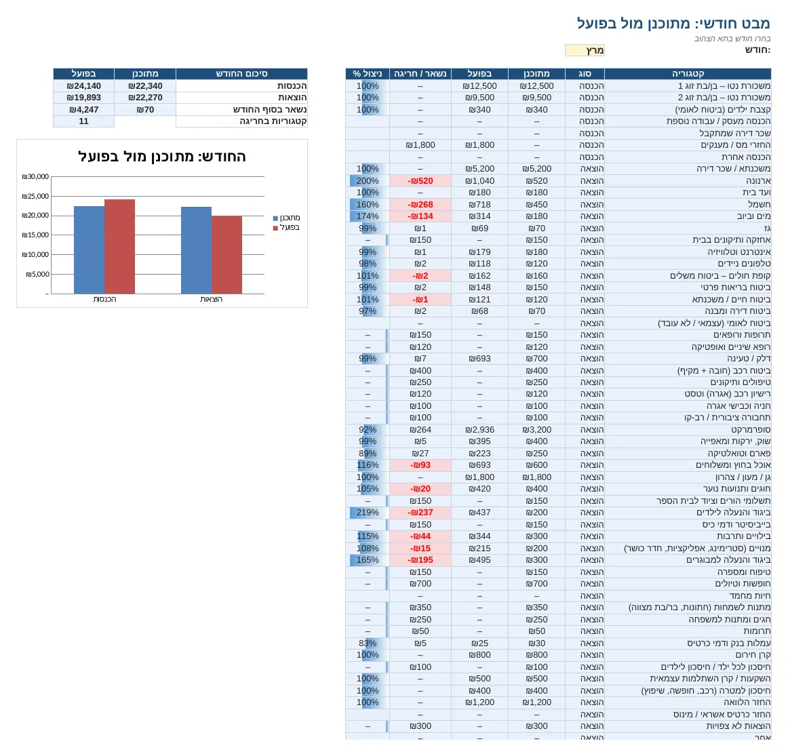
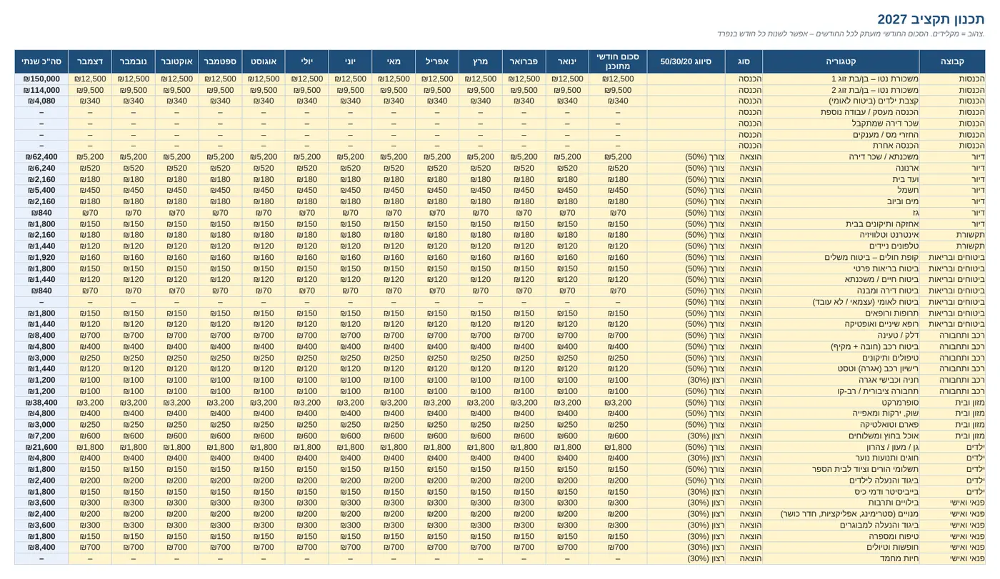
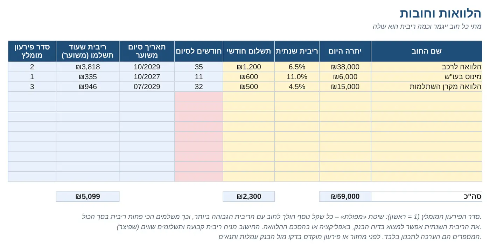

אקסל תקציב משק בית 2027: תקציב משפחתי Pro
קובץ אחד לתכנון ומעקב אחרי כל ההכנסות וההוצאות של הבית, עם הקטגוריות שיש באמת בבית ישראלי.
- מוכן לינואר 2027
- 56 קטגוריות ישראליות מוכנות
- מתוכנן מול בפועל לכל חודש
- Excel ו-Google Sheets
- הורדה מיידית
רוצים קודם לנסות? מחשבון 50/30/20 החינמי נותן חלוקה מומלצת בשקלים בתוך דקה.

מה יש בקובץ
9 גיליונות מחוברים. מקלידים רק בתאים הצהובים, וכל השאר מחושב בנוסחאות.
תכנון לכל חודש
סכום חודשי שמועתק ל-12 חודשים, ואפשר לשנות חודש חריג: ארנונה דו-חודשית, ביטוח רכב שנתי, חופשה בקיץ.
יומן תנועות עם רשימות
2,000 שורות. בוחרים קטגוריה מרשימה נפתחת, והקובץ משייך לבד את הסכום לחודש הנכון.
מבט חודשי
בוחרים חודש ורואים מתוכנן מול בפועל בכל קטגוריה, עם סימון אדום על חריגה.
דשבורד שנתי
הכנסות מול הוצאות, לאן הולך הכסף, יתרה מצטברת בעו"ש, שיעור חיסכון ובדיקת 50/30/20.
יעדי חיסכון
קרן חירום, חופשה, רכב: כמה צריך להפריש בכל חודש כדי להגיע ליעד בזמן.
הלוואות וחובות
מתי כל הלוואה תיגמר, כמה ריבית עוד תשלמו ואיזה חוב כדאי לסגור קודם.
ככה זה נראה
צילומי מסך מקובץ הדוגמה המצורף, שנה מלאה של משפחה לדוגמה. המספרים בדוגמה הם להמחשה.



איך מתחילים
רושמים תכנון
עוברים על הקטגוריות ורושמים סכום חודשי משוער. לוקח בערך 10 דקות.
מזינים תנועות
כל קנייה, או סיכום חודשי מתוך דף האשראי. הקטגוריה נבחרת מרשימה.
מסתכלים על הדשבורד
רואים איפה חרגתם, כמה נשאר בסוף החודש ואיך מתקדמים היעדים.
מה מקבלים בהורדה
- תקציב משק בית Pro 2027: קובץ ריק ומוכן לעבודה
- קובץ דוגמה מלא: שנה שלמה של משפחה לדוגמה, כדי לראות איך הכול מתחבר
- גרסת 2026: למי שרוצה לסגור את השנה הנוכחית
פורמט: .xlsx, בלי מאקרו. עובד ב-Excel, ב-Google Sheets ובאפליקציות לנייד. רכישה חד-פעמית, בלי מנוי.
שאלות נפוצות
באיזו תוכנה זה עובד?
Excel (2010 ומעלה, כולל Excel לנייד ו-Microsoft 365) ו-Google Sheets. ב-Google Sheets: מעלים את הקובץ ל-Drive ובוחרים «פתיחה באמצעות Google Sheets». LibreOffice עובד גם הוא. אין מאקרו.
זה מתאים לשנת 2027?
כן. הקובץ מגיע בגרסת 2027 מוכנה לינואר, וגם בגרסת 2026 למי שרוצה לסגור את השנה הנוכחית. שנת התקציב נקבעת בתא אחד, כך שאפשר להשתמש בו גם בשנים הבאות.
צריך להזין כל קנייה בסופר?
לא חייבים. אפשר להזין כל תנועה, ואפשר להסתפק בשורה אחת לכל קטגוריה בסוף החודש מתוך פירוט האשראי והבנק. הדשבורד עובד באותה צורה.
אפשר לשנות את הקטגוריות?
כן. יש 56 קטגוריות ישראליות מוכנות (ארנונה, ועד בית, קופת חולים, ביטוח לאומי, גן וצהרון ועוד), ואפשר לשנות שמות ולהוסיף עוד 34 קטגוריות משלכם. הרשימות הנפתחות מתעדכנות לבד.
איך מקבלים את הקובץ?
מיד אחרי התשלום ב-PayPal נפתח עמוד הורדה עם הקבצים. אפשר לשלם גם בכרטיס אשראי דרך PayPal, בלי לפתוח חשבון.
ומה אם הקובץ לא מתאים לי?
אם יש תקלה בקובץ שלא נפתרת, נחזיר את הכסף. פרטים מלאים במדיניות הביטולים וההחזרים באתר.
זה ייעוץ פיננסי?
לא. זה כלי לתכנון ומעקב אישי. הוא עוזר לראות את המספרים בצורה ברורה, וההחלטות נשארות שלכם.